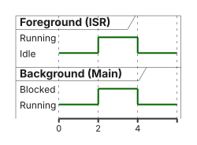
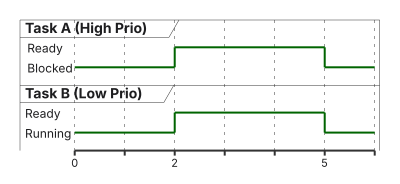
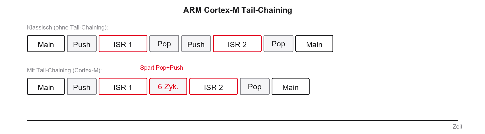

%%{init: {'theme': 'base', 'themeVariables': {'background': '#FFFFFF', 'primaryColor': '#FFFFFF', 'primaryBorderColor': '#E5E5EA', 'primaryTextColor': '#1D1D1F', 'lineColor': '#86868B', 'secondaryColor': '#F5F5F7', 'tertiaryColor': '#FFFFFF', 'mainBkg': '#FFFFFF', 'nodeBorder': '#E5E5EA', 'clusterBkg': '#F5F5F7', 'clusterBorder': '#E5E5EA', 'titleColor': '#1D1D1F', 'edgeLabelBackground': '#FFFFFF'}}}%%
graph TD
A[Init System] --> B{while 1}
B --> C[Lese Sensor]
C --> D[Verarbeite Daten]
D --> E[Update Display]
E --> B
style B fill:#FFFFFF,stroke:#E2001A,stroke-width:2px !important
01 · Was ist Echtzeit
Einführung und Paradigmenwechsel · EZS · DHBW Stuttgart
Prof. Dr.-Ing. Daniel Klünder
Willkommen zu den Echtzeitsystemen!
- Herzlich willkommen im Kurs Echtzeitsysteme (EZS) an der DHBW Stuttgart
- Neun Termine: je 90 Minuten Theorie und 90 Minuten Praxis am Board
- Fokus: moderne Multicore-Architekturen in der Industrie
- Hardware: STM32H755 (Dual-Core Cortex-M7/M4)
Agenda für heute
- Organisatorisches und Spielregeln
- Motivation und Definition von Echtzeit
- Bare-Metal: Polling, Interrupts, Foreground/Background
- Deep Dive: Cortex-M, NVIC und Tail-Chaining
- Hardware STM32H755 und Toolchain
- Laborübung am Board
Organisatorisches
- Prüfungsleistung: Details folgen (Klausur / Projekt — Angabe in Moodle)
- Materialien: Folien und Code auf der Kurswebsite und in Moodle
- Labor-Hardware: Boards werden gestellt (STM32H755)
- Tools: STM32CubeIDE (C/C++)
- Erwartung: aktive Mitarbeit im Labor — Programmieren lernt man durch Tippen
Literatur und Quellen
- Hermann Kopetz: Real-Time Systems (Design Principles)
- Giorgio C. Buttazzo: Hard Real-Time Computing Systems (Scheduling)
- STMicroelectronics: Reference Manual STM32H745/755 (RM0399)
- FreeRTOS Documentation (online)
- Tipp: Datenblätter und Reference Manuals sind Ihre wichtigste Alltagsquelle
Motivation: Warum Echtzeit?
- Steigende Komplexität in Embedded Systems
- Autonomes Fahren, Medizintechnik, Industrie 4.0
- Ein normaler PC (Windows/Linux) gibt keine harten Garantien
- Timing-Fehler können katastrophale Folgen haben
- Ziel: Systeme, die vorhersagbar reagieren
Der große Mythos der Echtzeit
Was viele denken:
- „Echtzeit = extrem schnell“
- „4 GHz ist echtzeitfähiger als 400 MHz“
- „Echtzeit = flüssiges Video“
Was es wirklich ist:
- Echtzeit = Rechtzeitigkeit
- Ein 400-MHz-Controller mit Garantie kann echtzeitfähig sein
- Ein 4-GHz-PC ohne Garantie ist es oft nicht
Konsequenzen von Timing-Fehlern
- Ausfälle entstehen logisch oder zeitlich
- Beispiel Airbag:
- Crash erkannt (logisch korrekt)
- Zündung ausgelöst (logisch korrekt)
- Zündung 50 ms zu spät (zeitlich falsch)
- Fazit: logisch richtig zur falschen Zeit ist ein Fehler
Lernziele des heutigen Tages
- Klassische Echtzeit-Definition (Werte- und Zeitbereich) erklären
- Harte, feste und weiche Echtzeit unterscheiden
- Metriken Latenz und Jitter verstehen
- Gefahren von Polling-Loops (Super-Loops) kennen
- Einfache Hardware-Interrupts einordnen und konfigurieren
Was ist Echtzeit? (Definition)
- Klassische Definition (häufig nach DIN 44300 zitiert): Echtzeitbetrieb, wenn
- Ergebnisse logisch korrekt sind (Wertebereich)
- Ergebnisse innerhalb eines vorgegebenen Zeitintervalls vorliegen (Zeitbereich)
- Determinismus: zeitliches Verhalten in jedem Zustand vorhersagbar
Klassifizierung von Echtzeitsystemen
- Nicht jede Fristverletzung ist gleich dramatisch
- Unterscheidung nach Konsequenzen eines Deadline Miss:
- Harte Echtzeit (Hard Real-Time)
- Feste Echtzeit (Firm Real-Time)
- Weiche Echtzeit (Soft Real-Time)
- Grenzen in der Praxis oft fließend und applikationsabhängig
Harte Echtzeit (Hard Real-Time)
- Deadline-Überschreitung hat katastrophale Folgen
- Schäden an Mensch, Umwelt oder extrem hoher Verlust
- Nutzen nach der Deadline: abrupt null oder negativ
- Beispiele: Motorsteuerung, Fly-by-Wire, Herzschrittmacher
Feste Echtzeit (Firm Real-Time)
- Zwischenstufe zwischen hard und soft
- Keine Katastrophe bei Fristverletzung
- Aber: Ergebnis nach der Deadline völlig wertlos (Nutzen = 0)
- Beispiele: High-Frequency Trading; Ausschuss-Erkennung am Band
Weiche Echtzeit (Soft Real-Time)
- Deadline-Überschreitung mindert Qualität, führt aber nicht zum Ausfall
- Ergebnis behält nach der Deadline oft noch Restwert
- Beispiele: Video-Streaming, UI-Verzögerung, Raumtemperaturüberwachung
- Die meisten Standard-IT-Systeme fallen hier hinein
Determinismus und WCET
- WCET: maximale, garantierte Ausführungszeit unter Worst-Case-Bedingungen
- BCET: minimale Ausführungszeit
- Harte Echtzeit immer auf Basis der WCET designen
- Caches, Pipeline-Stalls und Interrupts erschweren WCET bei modernen CPUs
Latenz (Response Time)
- Latenz: Verzögerung zwischen Ereignis und Reaktion
- Interrupt-Latenz: Flanke am Pin bis erste Instruktion der ISR
Jitter
- Jitter: Varianz der Latenz oder der Periodizität
- Soll alle 10 ms laufen, Ist 9,8 ms / 10,2 ms → Jitter 0,4 ms
- Regelungstechnik: hoher Jitter verschlechtert PID-Qualität stark
Zusammenfassung: Metriken
- Deadline: Zeitpunkt, bis zu dem das Ergebnis vorliegen muss
- WCET: längste Abarbeitungsdauer des Codes
- Latenz: Startverzögerung bis zur Reaktion
- Jitter: Schwankungsbreite der zeitlichen Ausführung
- Goldene Regel: Vorhersagbarkeit (Determinismus), nicht Durchsatz
Architekturen: Wie programmieren wir das?
- Wechsel von der Theorie zur Software-Architektur
- Ohne Betriebssystem: Bare-Metal
- Drei klassische Ansätze:
- Polling-Loops (Super-Loop)
- Interrupt-getriebene Systeme
- Foreground/Background-Systeme
Architektur 1: Die Polling-Loop (Super-Loop)
- Simpelstes Muster: Endlosschleife
while(1) - Tasks strikt sequenziell
- Status wird aktiv abgefragt („Polling“)
- Vorteil: simpel, wenig Overhead, leicht zu debuggen
Code-Beispiel: Polling
- Der Code fragt den Status zyklisch ab
- Frage: Was passiert, wenn
Update_Display()sehr lange dauert?
Die Gefahr: Das Heavy-Load-Problem
- Eine lang laufende Funktion blockiert die gesamte Schleife
- Auf Eingänge kann nicht reagiert werden
- Latenzgarantien sind zerstört
- Typische Sünden:
delay(100), blockierende Warteschleifen
Fazit: Polling
- Vorteile: simpel, keine Race Conditions, feste Reihenfolge
- Nachteile: hoher Stromverbrauch, keine Priorisierung, hohe Latenzen
- Einsatz: nur extrem simple Single-Purpose-Geräte
Architektur 2: Interrupts zur Rettung
- Interrupt: Hardware-Signal, das die CPU unterbricht
- Kontext sichern, Sprung in die ISR
- Nicht mehr fragen — die Hardware meldet sich
- Ereignisse priorisierbar (z. B. Not-Halt vor Display)
Der Ablauf eines Interrupts
%%{init: {'theme': 'base', 'themeVariables': {'background': '#FFFFFF', 'primaryColor': '#FFFFFF', 'primaryBorderColor': '#E5E5EA', 'primaryTextColor': '#1D1D1F', 'lineColor': '#86868B', 'secondaryColor': '#F5F5F7', 'tertiaryColor': '#FFFFFF', 'mainBkg': '#FFFFFF', 'nodeBorder': '#E5E5EA', 'clusterBkg': '#F5F5F7', 'clusterBorder': '#E5E5EA', 'titleColor': '#1D1D1F', 'edgeLabelBackground': '#FFFFFF'}}}%%
sequenceDiagram
participant HW as Hardware
participant CPU as CPU Main Loop
participant ISR as ISR
CPU->>CPU: Code ausführen (z. B. Display)
HW-->>CPU: Interrupt Request IRQ
Note over CPU: Context Switch
CPU->>ISR: Sprung zur ISR
Note over ISR: zeitkritische Arbeit
ISR-->>CPU: Return from Interrupt
Note over CPU: Register wiederherstellen
CPU->>CPU: alten Code fortsetzen
Code-Beispiel: Timer-Interrupt (STM32 HAL)
Gefahren von Interrupts
- Race Conditions bei gemeinsamen globalen Variablen
- Lange ISRs blockieren niederpriore IRQs und die Main-Loop
- Goldene Regel: ISRs extrem kurz halten — kein
printf, keine Delays - Jitter: laufende höhere IRQs verzögern niederpriore ISRs
Architektur 3: Foreground / Background
- Kombination: Main-Loop + Interrupts
- Background: unkritische Polling-Loop (
main) - Foreground: zeitkritische ISRs
- Standard für kleine bis mittlere Bare-Metal-Projekte

Grenzen der klassischen Architekturen
- Warum reicht Foreground/Background oft nicht mehr?
- Spaghetti-Falle: ISRs setzen Flags, Main pollt endlos
- Bei vielen Tasks verliert man den Überblick über den Kontrollfluss
- Wir brauchen Priorisierung und Schlafen von Tasks
Der Paradigmenwechsel
- Wenn Bare-Metal nicht skaliert: RTOS (Real-Time Operating System)
- Bare-Metal: Code pollt oder wartet aktiv
- RTOS: Kontrolle über die Zeit an den Scheduler
- Monolith → unabhängige Tasks
Vorschau: Das Task-Modell

- Task B rechnet; Event weckt Task A
- RTOS entzieht Task B die CPU (Präemption) und gibt sie Task A
Deep Dive: Die ARM Cortex-M Architektur
- Um Interrupts zu beherrschen, müssen wir die CPU verstehen
- Der STM32H755 basiert auf ARM Cortex-M (M7 und M4)
- Cortex-M ist für eingebettete Echtzeitsysteme optimiert
- Merkmale:
- 32-Bit-Architektur (Register, Busse, ALU)
- Deterministisches Interrupt-Verhalten
- Keine MMU (virtuelle Adressen), sondern MPU (Memory Protection Unit)
Das Register-Set der CPU
| Register | Rolle |
|---|---|
| R0–R12 | Allgemeine Datenregister |
| R13 (SP) | Stack Pointer |
| R14 (LR) | Link Register (Rücksprungadresse) |
| R15 (PC) | Program Counter |
| xPSR | Statusregister (Flags) |
- 16 Basis-Register à 32 Bit
- Bei Interrupt: Kontext dieser Register sichern (Hardware-Push)
Was passiert beim Context Switch?
- Interrupt unterbricht die Main-Loop
- CPU muss den Zustand retten, um später fortzusetzen
- Ablauf (hardwaregesteuert):
- Pipeline Flush, Abarbeitung stoppt
- Automatischer Push: R0–R3, R12, LR, PC, xPSR auf den Stack
- PC auf Startadresse der ISR setzen
- ISR ausführen
- Pop: Register vom Stack wiederherstellen
Der NVIC: Herr der Interrupts
- NVIC = Nested Vectored Interrupt Controller
- Sitzt im Cortex-M-Kern, eng mit der CPU verzahnt
- Verwaltet viele Interrupt-Quellen (beim STM32 bis zu 240)
- Vectored: jeder Interrupt hat einen Eintrag in der Vector Table
- Hardware springt direkt zur ISR — kein Software-Switch-Case
Prioritäten im NVIC
- Nested: ein wichtiger Interrupt darf einen unwichtigeren unterbrechen
- Prioritäten als Nummern (z. B. 4 Bit → 0 bis 15)
- Falle: je kleiner die Zahl, desto höher die Priorität
- Priorität 0: höchste Priorität
- Priorität 15: niedrigste Priorität
Preemption Priority vs. Subpriority
- Prioritäts-Bits lassen sich aufteilen (Grouping)
- Preemption Priority: darf ein IRQ einen laufenden IRQ unterbrechen?
- Subpriority: bei gleichzeitigem Auftreten — wer zuerst?
- Höhere Subpriority unterbricht niemals einen bereits laufenden Interrupt
Tail-Chaining: ARMs Geheimwaffe
- Zwei Interrupts A und B treten kurz nacheinander auf
- Klassisch: Push → ISR A → Pop → Push → ISR B → Pop
- Tail-Chaining: Cortex-M überspringt sinnloses Pop/Push zwischen ISRs
- Dauer: typisch 6 Taktzyklen statt ca. 24 Zyklen Latenz

Exkurs Hardware: Der STM32H755
- Dual-Core-Mikrocontroller, Asymmetric Multiprocessing (AMP)
- Cortex-M7 (bis 480 MHz): hohe Leistung, Caches, FPU
- Cortex-M4 (bis 240 MHz): harte Echtzeit, hochdeterministisch
- Beide Cores teilen Chip, Busse und teilweise Speicher
Warum Dual-Core (AMP) in der Echtzeit?
Cortex-M7 (eher soft):
- Ethernet-Stack (TCP/IP)
- GUI
- aufwändige Filter (DSP)
- Latenz schwankend (Caches)
Cortex-M4 (eher hard):
- Motorsteuerung (PWM)
- harte Timing-Loops
- sicherheitskritische Logik
- Latenz hochdeterministisch
- Inter-Core-Kommunikation: Shared Memory im SRAM
Boot-Sequenz des STM32H755
- Beim Reset starten nicht beide Cores gleichzeitig
- Cortex-M7 bootet als Master
- Cortex-M4 bleibt zunächst im Reset/Sleep
- M7 konfiguriert Systemtakt (PLL), dann weckt M4 (HSEM/RCC)
%%{init: {'theme': 'base', 'themeVariables': {'background': '#FFFFFF', 'primaryColor': '#FFFFFF', 'primaryBorderColor': '#E5E5EA', 'primaryTextColor': '#1D1D1F', 'lineColor': '#86868B', 'secondaryColor': '#F5F5F7', 'tertiaryColor': '#FFFFFF', 'mainBkg': '#FFFFFF', 'nodeBorder': '#E5E5EA', 'clusterBkg': '#F5F5F7', 'clusterBorder': '#E5E5EA', 'titleColor': '#1D1D1F', 'edgeLabelBackground': '#FFFFFF'}}}%%
sequenceDiagram
participant Reset as Reset Hardware
participant M7 as Cortex-M7
participant M4 as Cortex-M4
Reset->>M7: Boot Power-On
Reset->>M4: Held in Reset
Note over M7: System Clock PLL
M7->>M7: Init HAL und Peripherie
M7->>M4: Wakeup RCC/HSEM
Note over M4: unabhängiger Boot
M4->>M4: Init lokale Peripherie
Einführung in die Tools: STM32CubeIDE
- STM32CubeIDE: Eclipse-basierte C/C++-IDE für STM32
- Device Configuration Tool (ehemals CubeMX)
- Grafische Pin-Zuweisung und Clock-Tree
- Codegenerator für die HAL
Das HAL-Konzept
- Nicht direkt in Register tippen (Standardfall)
- HAL: lesbar und oft portabel innerhalb der STM32-Familie
- Nachteil: leichter Aufruf-Overhead
- Extreme Echtzeit: LL oder direkte Register
Projektstruktur und Code-Generierung
- Pro Core eigener Ordner (CM4 / CM7)
- Je eigene
main.cundstm32h7xx_it.c - Eigener Code nur zwischen
USER CODE BEGINundUSER CODE END - Code außerhalb dieser Blöcke wird beim erneuten Generieren gelöscht
Laboraufgabe 1: Hello World (LED Blink)
- Ziel: Toolchain prüfen, Cortex-M4 nutzen
- Schritte:
- Projekt anlegen (Board STM32H755ZI-Q)
- LED (z. B. PE1) als
GPIO_Outputfür CM4 - Code generieren
- In
main.c(CM4) toggeln
Laboraufgabe 2: Das Polling-Desaster
- Ziel: Grenzen der Super-Loop spüren
Heavy_Load()vor dem Toggle aufrufen (simuliert Filter/Display)
- Beobachtung: Warum ist der 500-ms-Takt zerstört?
Laboraufgabe 3: Rettung durch den Timer
- Ziel: Determinismus per Interrupt wiederherstellen
- In der
.ioc: TIM2 aktivieren, Clock Source Internal - NVIC: „TIM2 global interrupt“ aktivieren
- Timer im Interrupt-Modus starten
- Periodizität berechnen, z. B. 500 ms (2 Hz):
\[f_{\mathrm{UPD}} = \frac{f_{\mathrm{CLK}}}{(PSC+1)\,(ARR+1)}\]
Laboraufgabe 3: Der Callback-Code
- Toggle und Delay aus der
while(1)entfernen — dort nur nochHeavy_Load() - Callback ans Ende von
main.c:
- Ergebnis: LED blinkt präzise, unabhängig von der CPU-Last
Laboraufgabe 4 (Bonus): Messung am Oszi
- Ziel: Jitter Main-Loop vs. Timer-ISR messen
- Freien GPIO (z. B. PA0) als Output nutzen
- Ablauf: Pin High →
Heavy_Load()→ Pin Low; Pulsweite am Oszi - Vergleich: Pin-Toggle in der ISR (Jitter \(\approx 0\))
Zusammenfassung des Tages
- Echtzeit = Rechtzeitigkeit, nicht pure Rechenleistung
- Super-Loops skalieren schlecht (Latenz-Akkumulation)
- Interrupts ermöglichen Hardware-Präemption (Foreground/Background)
- NVIC: Prioritäten hardwarenah, inkl. Tail-Chaining
- Workflow: Bare-Metal-Code auf Cortex-M4 generieren und erweitern
Ausblick auf Termin 2
- Bare-Metal mit vielen IRQs skaliert nicht ewig (Spaghetti-Flags)
- Nächste Woche: Scheduling-Theorie
- Praxis: eigener einfacher Round-Robin-Scheduler auf dem STM32
- Vorbereitung: heutiges Projekt mitbringen